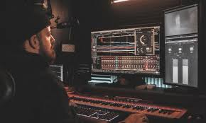

Lo que dicen nuestros clientes
Juan M. Músico independiente
"Llevo más de 15 años tocando el bajo, y he pasado por decenas de tiendas físicas y virtuales en Colombia, Venezuela y Estados Unidos. Siempre he tenido una visión muy crítica sobre la atención al cliente, especialmente en el mundo musical, donde muchas veces subestiman al músico que empieza o al que tiene dudas. Pero esta tienda me dejó sin palabras.
Desde el momento en que pregunté por un bajo Fender Jazz Bass, recibí un trato cálido, profesional y lleno de pasión. No solo me mostraron todas las opciones disponibles, sino que se tomaron el tiempo para preguntarme qué estilo tocaba, qué sonido buscaba, y qué presupuesto tenía.
El proceso de compra fue transparente, sin presión, y el envío llegó dos días antes de lo previsto, impecablemente embalado, con un pequeño obsequio: un afinador digital de regalo y una nota escrita a mano que decía: 'Sigue haciendo música, Juan'.
Ese detalle, esa humanidad, esa pasión por lo que hacen... eso no se compra con dinero. Desde entonces, he recomendado esta tienda a todos mis alumnos. Porque no es solo una tienda: es un lugar donde la música se toma en serio, y el cliente se trata como parte de una familia."
Laura G. Estudiante de música
"Cuando comencé mis estudios de música clásica en la universidad, me enfrenté a un problema muy común entre estudiantes de bajos recursos: no tenía un instrumento propio. Estaba sobreviviendo con un teclado prestado, viejo, sin sensibilidad ni pedal. Busqué ayuda en varias tiendas, pero muchas me respondían con indiferencia o con precios imposibles.
Hasta que un amigo me habló de esta tienda. Desde el primer mensaje, sentí que algo era diferente. Me escribieron como si ya me conocieran, me escucharon con paciencia, y me ayudaron a encontrar un teclado digital Yamaha que se adaptaba perfectamente a mis necesidades. Me ofrecieron opciones de pago flexibles, me explicaron los cuidados básicos del instrumento y, por si fuera poco, me agregaron a un grupo de WhatsApp donde comparten consejos, descuentos y hasta convocatorias para conciertos.
Gracias a esta tienda pude empezar a practicar de verdad, mejorar mi técnica y presentarme en público con seguridad. Hoy, no solo tengo un instrumento: tengo un respaldo. Tengo a alguien que cree en los músicos jóvenes, y eso vale más que mil teclas"

Carlos R. Productor musical
"Como productor independiente que trabaja desde casa, cada inversión que hago en equipo es una decisión crítica. No puedo permitirme errores. Cuando decidí renovar mis monitores de estudio y mi interfaz de audio, pasé semanas investigando en foros, viendo comparativas y revisando reseñas. Pero aún así, me sentía inseguro. Hasta que hablé con el equipo de esta tienda.
Lo que me convenció no fue solo su conocimiento técnico –que es excelente–, sino la forma en que explican todo sin complicarte. Me ayudaron a entender por qué ciertos modelos se ajustaban más a mi tipo de mezcla, me alertaron sobre marcas que estaban bajando en calidad, y hasta me compartieron un video personalizado explicando cómo sacar el mejor sonido de mis nuevos equipos.
Y eso no fue todo. Al recibir los productos, me mandaron un PDF detallado con recomendaciones de ecualización, colocación de monitores y cuidados a largo plazo. Hoy tengo un home studio funcional, sueno mucho mejor, y he conseguido más clientes para mis producciones. Gracias por ser una tienda que no solo vende, sino que educa, acompaña y construye comunidad"

Ana P. Mamá de un pequeño baterista
"Mi hijo Nicolás tiene 10 años y un diagnóstico de autismo leve. Desde muy pequeño mostró un amor enorme por los ritmos, golpeaba ollas, cajas, cualquier cosa que hiciera ruido. Sabíamos que la música era su lenguaje, su forma de conectar con el mundo. Así que decidimos regalarle una batería electrónica.
En la mayoría de tiendas a las que consulté, me ofrecían los modelos más caros o ni siquiera me preguntaban por las necesidades de mi hijo. Pero cuando hablé con esta tienda, todo cambió. Me preguntaron su edad, su nivel, sus sensibilidades, incluso me consultaron sobre el espacio que teníamos en casa y si necesitaba audífonos con cancelación.."